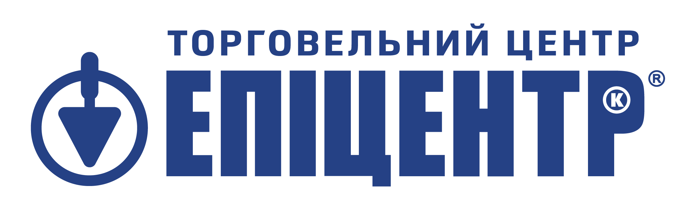
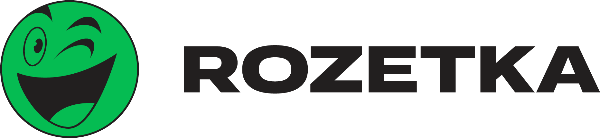
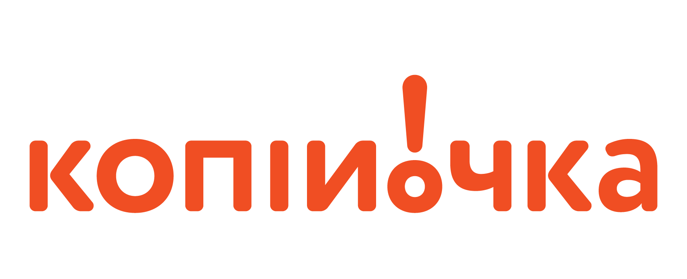

ТОВ «Інтелком»
Ваш надійний виробник пластмасової та металевої продукції в Україні
35тис.м2
Сучасного виробництва
30років
Досвіду та партнерства
Інноваційне виробництво з повним циклом та багаторічним досвідом
ТОВ «Інтелком» — один з провідних виробників в Україні з понад 30-річним досвідом. Компанія виготовляє іграшки під брендом «Технок», пластикові деталі та металеві конструкції, працюючи за принципом повного циклу виробництва — від розробки до готового продукту з багаторівневим контролем якості Виробництво поєднує сучасні технології, інженерну майстерність та високоточне обладнання, що дозволяє реалізовувати масштабні та нестандартні проєкти. Сонячна електростанція на території підприємства зменшує вуглецевий слід і підвищує енергоефективність, а стабільні виробничі потужності роблять «Інтелком» надійним партнером в Україні та за її межами.Ми працюємо у трьох ключових напрямках
@@include('../partials/direction-block.html', {"title": "Іграшки «ТехноК»", "imgPath": "assets/banners/Frame1.jpg", "description": "Високоякісні сертифіковані іграшки власного виробництва, орієнтовані на розвиток та безпеку дитини"})
@@include('../partials/direction-block.html', {"title": "Вироби з пластмаси", "imgPath": "assets/banners/Frame2.jpg", "description": "Лиття пластмас під тиском за індивідуальними кресленнями та технічними умовами"})
@@include('../partials/direction-block.html', {"title": "Вироби з металу", "imgPath": "assets/banners/Frame3.jpg", "description": "Повний цикл металообробки: фрезерування, токарні, зварювальні роботи, складання та фарбування"})
23.11
2025

Компанія «ІНТЕЛКОМ» увійшла до рейтингу Forbes Ukraine Next250
Компанія ТОВ «ІНТЕЛКОМ», що представляє український бренд дитячих іграшок «ТехноК», увійшла до рейтингу Forbes Ukraine Next250
23.11.2025
Компанія «ІНТЕЛКОМ» увійшла до рейтингу Forbes Ukraine Next250
Компанія ТОВ «ІНТЕЛКОМ», що представляє український бренд дитячих іграшок «ТехноК», увійшла до рейтингу Forbes Ukraine Next250 — списку найперспективніших малих та середніх компаній
03.01.2026
ТОВ «ІНТЕЛКОМ» — інвестиції у чисту енергію та енергетичну незалежність
Компанія ТОВ «ІНТЕЛКОМ» послідовно впроваджує сучасні енергоефективні рішення та активно розвиває напрямок відновлюваної енергетики.

03.03.2026
ТОВ «ІНТЕЛКОМ» відзначено найвищою нагородою ТПП України
Під час проведення Міжрегіонального форуму «Український експорт: сьогодення та майбутнє» президент Торгово-промислової палати



